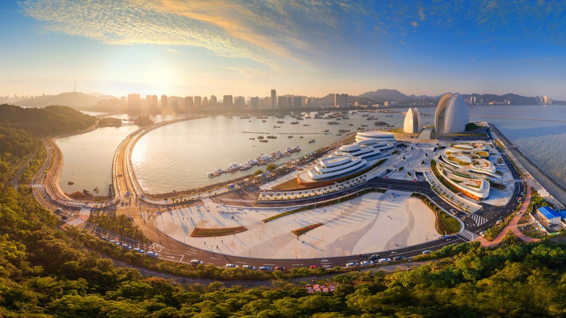

作为连接粤港澳三地的跨境大通道，港珠澳大桥将在大湾区建设中发挥重要作用。 它被视为粤港澳大湾区互联互通的“脊梁”，可有效打通湾区内部交通网络的“任督二脉”。
海韵城建筑风格与大小贝壳呼应，整体设计以“渔舟唱晚”为立意，打造了多个梭形的建筑形态， 文化与商业相辅相成，它不仅仅是珠海大剧院配套商业项目，还是浪漫珠海文化旅游、休闲娱乐新地标。
这里波澜起伏五颜六色的长廊水泥坐椅，或幽或荫，或凸或凹，弯弯曲曲颇有胸怀。 咖啡吧、爱情邮局、定情广场等温馨景致，环绕着一袭海浪卷腹、涛声柔柔的浅浅沙滩， 或坐或卧，或呈奔走之势，吸引游人逗留流连。
珠海渔女是珠海市的象征，位于珠海风景秀丽的香炉湾畔，矗立着一尊巨型石刻雕像——珠海渔女， 她领戴项珠，身掮渔网，裤脚轻挽，双手高高擎举一颗晶莹璀璨的珍珠，带着喜悦而又含羞的神情， 向世界昭示着光明，向人类奉献珍宝。
珠海长隆海洋王国是全球最大的海洋主题公园，全力打造世界顶级、规模最大、游乐设施最丰富也 是最富有想象力的海洋动物为主题的休闲公园，拥有多项世界或行业之最，即世界最 大的海洋主题乐园；全球首创大型游乐设施与珍贵动物展区相结合的独特设计等
圆明新园以北京圆明园为原稿，按1：1比十景中的十八景修建而成，投资6亿元人民币， 是我国首批4A级景区之一。它三面环山，南面平坦开阔，福海湖水域面积8万平方米。